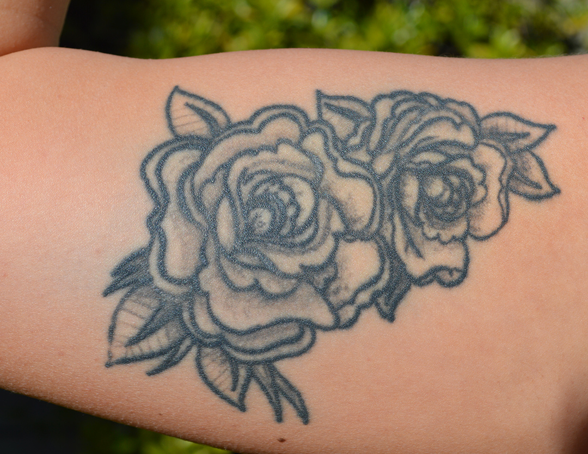

1 / 10
Cal Poly junior and English major, Amittai Zamora, poses against the wall of her college home to show us her first tattoo. Date: 2/6/2020
2 / 10

“Shenron is a wish-granting dragon from Dragon Ball. Me and all my brothers grew up watching it and we all still love it to this day. So I figured if Shenrons got my back, all my wishes would be granted. I have 5 tattoos at the moment and still want a lot more. I like decorating my body, that’s kinda it. I’m a simple woman. I like the way they look & I like having little reminders of the things I love.” Date: 2/6/2020
3 / 10

Cal Poly junior and Business major, Callahan Rohner, stands in the front yard of his house he has lived in for the past two years posing with a scrub he uses on his grill (cooking is one of his favorite hobbies). Date: 2/5/2020
4 / 10

“This tattoo is placed over my heart and represents my father’s birthday. He passed away from pancreatic cancer when I was 18 years old, so it serves as a reminder of how great of a father he was every day. It also allows me to talk to others about him which, in a way, keeps his memory alive for anyone who didn’t get the chance to meet him.” Date: 2/5/2020
5 / 10

Cal Poly junior and Journalism major, Mika Lincoln, stands with her back to us to show off her two favorite tattoos out of the four that she has. Date: 2/10/2020
6 / 10
“I got my first tattoo on my wrist when I turned 18. My parents said if I ever got a tattoo they would disown me, so I have four. I didn’t know what I wanted as my first tattoo so I just went for it. I hid it from my parents for three years successfully until my Mom finally confronted me, but by then I had three tattoos. The wave on my arm is my newest one. I just got it when I ran away to Spain for Thanksgiving. I spent 3 hours laughing, crying, and talking in this tattoo shop with the coolest man ever, I still keep in touch with Boris (the tattoo artist) and can’t wait to go back and get tattooed by him again. People now ask me about my “White Claw Wave tattoo” and I’ve gotten free drinks from flashing it in bars. I’m trying to limit myself to one tattoo a year so I don’t get out of control... but we’ll see how long that lasts.” Date: 2/10/2020
7 / 10
Cal Poly junior and Business major, Kyle Hegarty, lounges on his backyard stairs, enjoying some California winter weather– a nice change from the Philadelphia winters he grew up with. Date: 2/6/2020
8 / 10

“I wanted to get a tattoo but I wasn’t sure on the design. My friend had an appointment for a tattoo and was told I should tag along and get one too. The design was based off a Patagonia logo I saw and I modified it and added the skeleton and changed the surfboard. I wanted to get a tattoo because it’s permanent and I thought the idea of adding something permanent that wasn’t originally there would be cool.” Date: 2/6/2020
9 / 10

Cal Poly junior and Recreation, Parks and Tourism Administration major, Sophia Tomeo, enjoys some afternoon sun in her backyard on a Wednesday afternoon before her last class of the day. Date: 2/5/2020
10 / 10

“I’ve really always wanted tattoos since I was a little girl, so when I turned 18, I started my tattoo journey. This tattoo has a lot of personal meaning to me, as my best friend was a tattoo apprentice at the time and had designed the flowers specifically for me. I put a lot of trust in him at the time and it came out to be something that I know I’ll cherish on my body forever.” Date: 2/5/2020